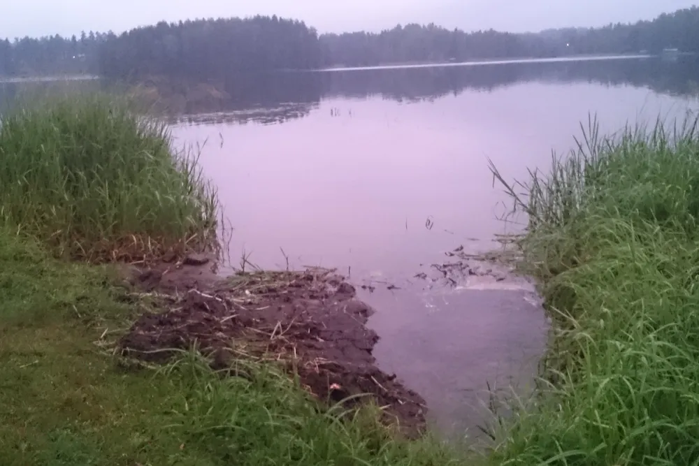
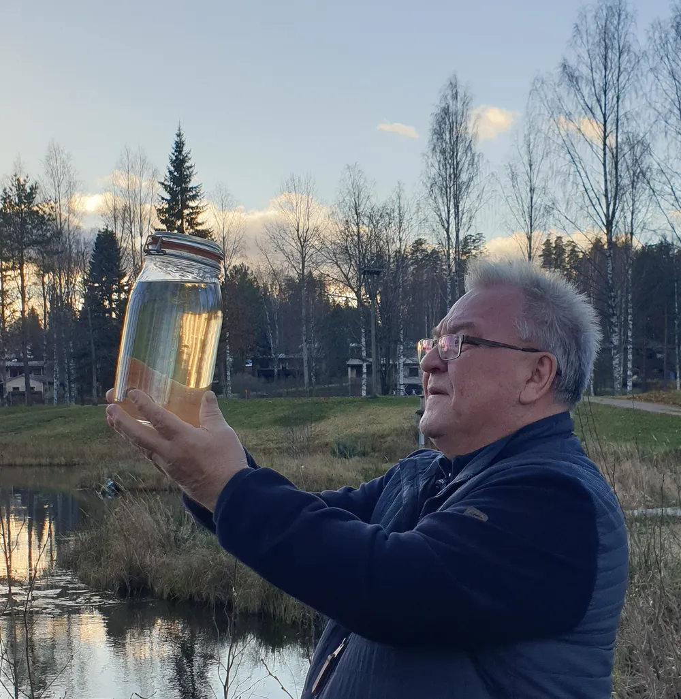

01 · Tummuminen
Vesi tummuu
Valuma-alueelta huuhtoutuva humus ja kiintoaine vievät veden kirkkautta. Näkösyvyysmittausten tavoitteena on saada pitkä aikasarja siitä, missä tummumiskehitys on nopeinta.
Järvi
Karu, kirkasvetinen ja poikkeuksellisen hyvässä kunnossa oleva järvi Etelä-Karjalan ja Etelä-Savon rajalla. Kuolimo laskee Saimaaseen ja kuuluu Vuoksen vesienhoitoalueeseen.
Tunnusluvut
Järven tunnusluvut: Järviwiki, Suomen ympäristökeskus. Suojelualuetiedot: ymparisto.fi.


Saimaannieriä
Kuolimo on Suomessa ainoa järvi, jossa kasvaa alkuperäiskantainen eli relikti Saimaan nieriä, kansanomaisesti nahkalohi. Kanta on säilynyt paikallaan jääkauden jälkeen, ja se lisääntyy järvessä luontaisesti.
Muualla Saimaalla esiintyvä isonieriäkanta poikkeaa geneettisesti Kuolimon kannasta merkittävästi. Jos Kuolimon kanta menetetään, sitä ei voi korvata istutuksilla muualta.
Saimaannieriä on luokiteltu äärimmäisen uhanalaiseksi. Nieriä on kylmän ja kirkkaan veden kala: se tarvitsee hapekasta syvännettä ja puhtaita, liettymättömiä kutusoraikkoja. Siksi nieriän suojelu tapahtuu suurelta osin valuma-alueella, kaukana itse kutupaikoista.
Kuolimolla on voimassa kalastusrajoituksia nieriän suojelemiseksi. Ajantasaiset rajoitukset ja rajoitusalueet kannattaa tarkistaa Ala-Kuolimon osakaskunnalta ennen kalaan lähtöä.
Uhat
Kuolimon tila on hyvä, mutta ei muuttumaton. Työmme kohdistuu kolmeen asiaan, joihin valuma-alueella voi vaikuttaa.
01 · Tummuminen
Valuma-alueelta huuhtoutuva humus ja kiintoaine vievät veden kirkkautta. Näkösyvyysmittausten tavoitteena on saada pitkä aikasarja siitä, missä tummumiskehitys on nopeinta.
02 · Ravinteet
Metsä- ja maatalous, ojitukset, haja-asutuksen jätevedet ja puhdistamon purkuvedet tuovat järveen ravinteita. Tarkkailuraportit ovat julkisia.
03 · Rehevöityminen
Sinilevähavainnot kirjataan järjestelmällisesti vuodesta 2024. Havainnot kertovat, missä ravinteet alkavat näkyä myös pintavedessä.
Seuraava askel
Suurin osa Kuolimoon vaikuttavista päätöksistä tehdään yksityismailla: hakkuun suojavyöhykkeessä, ojan päässä, kiinteistön jätevesijärjestelmässä. Siksi teemme työtä yhdessä maanomistajien kanssa.
